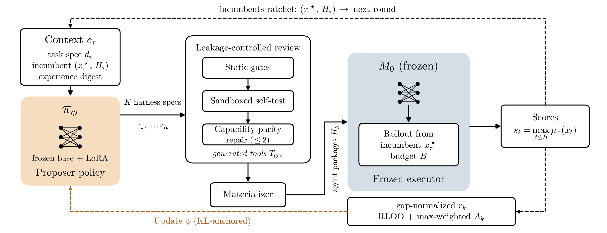

Beyond Finch-9B
The same frozen Qwen3.5-9B executor, with proposer adaptation instead of discovery finetuning.
HarnessRL trains the outer-loop proposer to synthesize prompts, skills, control logic, and new tools—while a 9B inner-loop executor remains frozen.
Every visible score links back to an exported campaign artifact. No executor weight update is hidden behind the curve.
tasks above Finch-9B
published ≤10B best results
frozen inner executor
harness candidates per round
HarnessRL (weight) exceeds the discovery-finetuned Finch-9B on all eleven tasks and reaches five published ≤10B best results.

The same frozen Qwen3.5-9B executor, with proposer adaptation instead of discovery finetuning.
Narrowly improves on the best known human construction shown in the evaluation suite.
Matches the strongest closed-model result reported under OpenEvolve.
| Mathematical discovery | Algorithm engineering | System performance | |||||||||
|---|---|---|---|---|---|---|---|---|---|---|---|
| Method | Erdős ↓ | AC1 ↓ | AC2 ↑ | CP ↑ | Had. ↑ | ahc039 ↑ | ahc058 ↑ | EPLB ↑ | PRISM ↑ | SQL ↑ | Txn ↑ |
| Initial program | 0.495056 | 1.5186 | 0.8558 | 0.959764 | 0.143275 | 534,850 | 0 | 0.1265 | 21.89 | 0.6856 | 2824.86 |
| OpenEvolve + open-source models | |||||||||||
| Finch-2B | 0.381346 | 1.5184 | 0.8920 | 1.535134 | 0.400476 | 545,256 | 329,359,253 | 0.1269 | 22.26 | 0.6860 | 2949.85 |
| Qwen3.5-2B | 0.381737 | 1.5186 | 0.8646 | 1.253056 | 0.478009 | 546,078 | 0 | 0.1265 | 21.89 | 0.6856 | 2832.86 |
| Finch-4B | 0.386460 | 1.5173 | 0.8933 | 1.806808 | 0.146199 | 551,844 | 331,466,883 | 0.1267 | 22.87 | 0.6857 | 4761.90 |
| Qwen3.5-4B | 0.416924 | 1.5186 | 0.8802 | 1.680787 | 0.384332 | 542,077 | 0 | 0.1266 | 21.89 | 0.6856 | 2732.24 |
| Finch-9B | 0.381100 | 1.5141 | 0.9122 | 1.936000 | 0.480585 | 553,759 | 525,286,896 | 0.1265 | 23.93 | 0.7024 | 3636.36 |
| Qwen3.5-9B | 0.385512 | 1.5186 | 0.8801 | 1.172702 | 0.397184 | 553,582 | 134,486,700 | 0.1269 | 22.36 | 0.6858 | 3584.23 |
| Ours · frozen Qwen3.5-9B executor | |||||||||||
| HarnessRL initial | 0.456591 | 1.5182 | 0.8961 | 1.477767 | 0.360961 | 557,225 | 134,487,000 | 0.1265 | 24.02 | 0.0934 | 3610.11 |
| HarnessRL context | 0.395849 | 1.5098 | 0.9263 | 2.370463 | 0.517212 | 559,534 | 562,824,208 | 0.1278 | 23.04 | 0.7267 | 3906.25 |
| HarnessRL weight | 0.380919 | 1.5098 | 0.9339 | 2.541000 | 0.573283 | 559,534 | 713,552,303 | 0.1272 | 26.26 | 0.7415 | 4255.32 |
The LLM-SQL winner carries a curated-note provenance caveat and is excluded from SOTA claims. Full per-task sources and evaluator caveats remain in the paper artifact ledger.
Existing frozen-executor systems can retain a better artifact, but their proposal policy stays fixed. HarnessRL makes that policy itself adaptive.
The proposer emits a complete NexAU harness: system prompt, mounted skills, tools, middleware, and control parameters.
Each candidate and its incumbent control use the same decode seed. Credit is based on their score difference, not the candidate score alone.
RLOO turns the eight outer-loop trajectories into a proposer update. The executor checkpoint never changes.

The learned object changes with the task. Browse accepted packages from extremal mathematics, heuristic search, and systems—then inspect the exact prompt, skill, tool, middleware, and control files.
Loading executable harness packages…
Accepted package example · not a reconstructed evolution curve
Replay a full evolution curve or open an artifact-complete audit round. Artifact availability and provenance are shown explicitly for every campaign.
Loading exported campaign evidence…
Serve this directory over HTTP and regenerate the data with python3 website/scripts/build_evolution_data.py.
A score change can be traced from the proposer’s hypothesis to a runnable agent package, the executor’s actions, and its paired reward.
The public replay retains invalid proposals, frozen-executor repairs, rejected proposer updates, plateaus, and an externally directed seed graft.